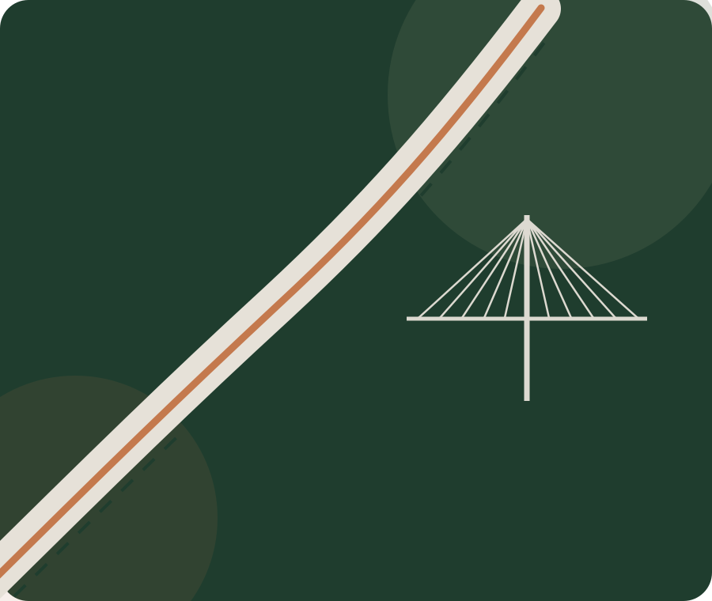

Consultoria de Engenharia para Condomínios
Apoio técnico para síndicos, administradoras e conselhos tomarem decisões com mais segurança, previsibilidade e documentação.
Entender o serviçoA Viares transforma problemas de engenharia em diagnósticos claros, planos de ação e decisões bem documentadas — da inspeção e do laudo à gestão da execução.

Envie o problema. A primeira etapa é enquadrar necessidade, risco e o tipo de entrega mais adequado.
Descrever minha demandaO foco não é apenas produzir um documento: é dar clareza técnica para decidir o que fazer, contratar melhor e acompanhar o resultado.
Apoio técnico para síndicos, administradoras e conselhos tomarem decisões com mais segurança, previsibilidade e documentação.
Entender o serviçoInspeção, diagnóstico e documentação técnica para estruturas com fissuras, corrosão, deformações, danos ou necessidade de avaliação de segurança.
Entender o serviçoPlanejamento, controle e acompanhamento técnico de obras para proteger prazo, custo, qualidade e aderência ao escopo contratado.
Entender o serviçoDiagnóstico de aderência e plano de adequação para serviços, instalações e rotinas que precisam atender requisitos técnicos aplicáveis.
Entender o serviçoApoio técnico para estruturar controles, documentação e práticas de segurança em obras, manutenção predial e serviços com risco ocupacional.
Entender o serviçoAnálise técnica independente para conflitos, defeitos construtivos, danos, responsabilidades e produção de evidências na construção civil.
Entender o serviçoEssas frentes surgem das mesmas dores: manutenção, reforma, patologia, risco, orçamento e documentação.
Levantamento sistemático das condições da edificação para priorizar riscos, manutenção e investimentos do condomínio.
Ver detalhesApoio ao condomínio na análise técnica de reformas em unidades, documentação, riscos e critérios de aprovação conforme requisitos aplicáveis.
Ver detalhesInvestigação técnica de infiltrações, fissuras, desprendimentos, corrosão e outras manifestações para orientar a solução correta.
Ver detalhesA Viares ajuda a reduzir a assimetria de informação em decisões que envolvem risco, patrimônio, prazo e responsabilidade.
Uma abordagem consultiva, rastreável e orientada ao resultado.
Entendimento da demanda, contexto, riscos, documentos e evidências.
Definição do escopo, investigação, prioridades e critérios de decisão.
Relatório, laudo, parecer, escopo ou plano de ação.
Apoio na contratação, execução, fiscalização, medição ou verificação.
Conte o contexto da demanda. A Viares pode enquadrar o melhor próximo passo técnico.
Respostas rápidas para reduzir dúvidas e acelerar o primeiro contato.
Não. A estratégia comercial do site prioriza condomínios, síndicos e administradoras, mas a Viares também pode atender construtoras, incorporadoras, empresas, escritórios jurídicos e proprietários.
Quando o escopo exigir e estiver dentro da atribuição do responsável técnico, a entrega pode incluir laudo, parecer, relatório e ART correspondente ao serviço contratado.
Sim. O diagnóstico inicial ajuda a entender a situação, definir prioridades e estruturar o próximo passo antes de uma contratação maior.
Dependendo do escopo, a Viares pode apoiar especificação, contratação, fiscalização, medição, controle de pendências e recebimento técnico.
Engenharia técnica o suficiente para ser confiável e clara o suficiente para apoiar a decisão.